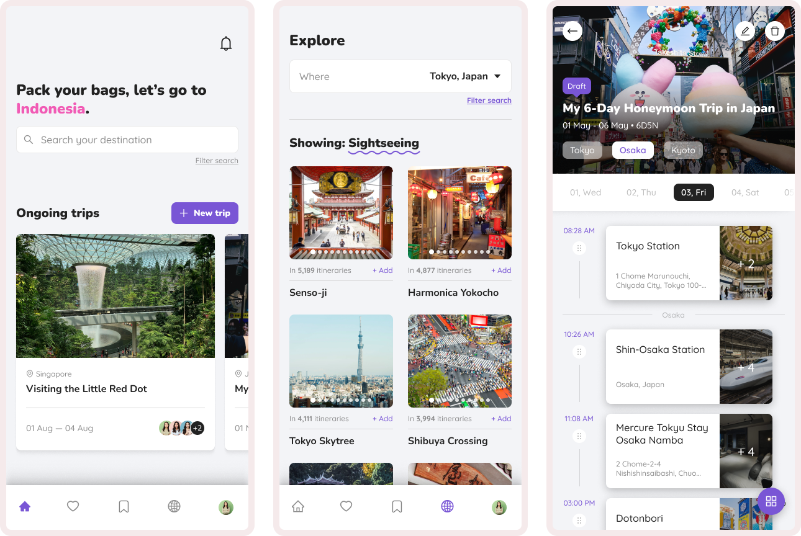

04
Lah-gage: Travel Itinerary Mobile Application
Have you ever wondered where your friends traveled during their holidays, or asked for tips on what to do in places they’ve explored? I have, and that’s why I designed this travel app that lets you upload, explore, and connect through personalized itineraries!
 15 mins read
15 mins read
